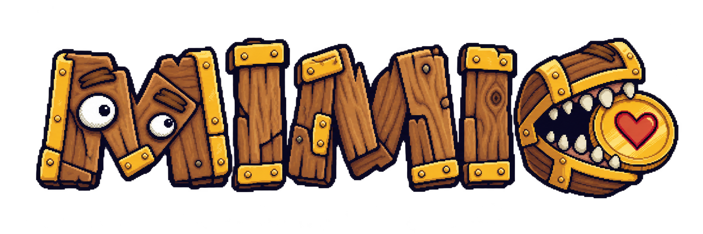
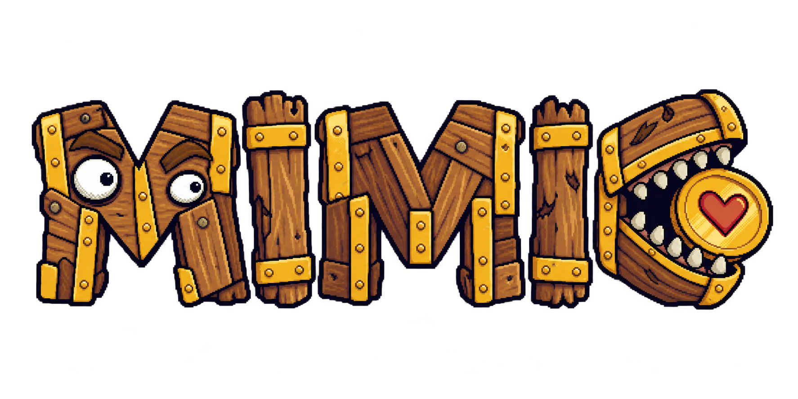
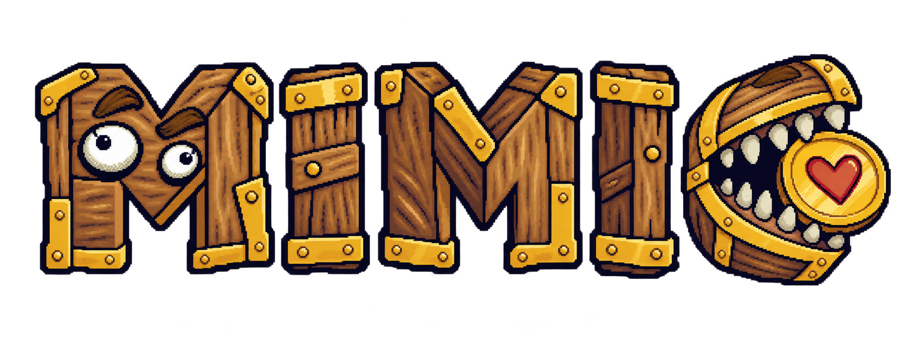
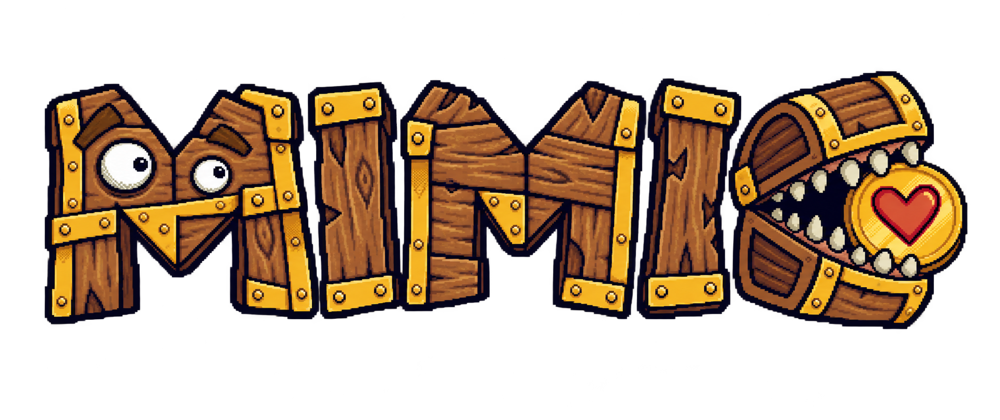
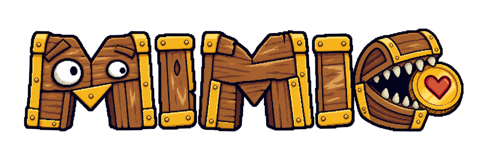
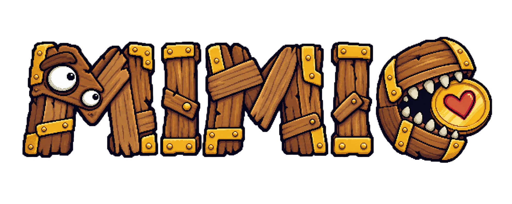
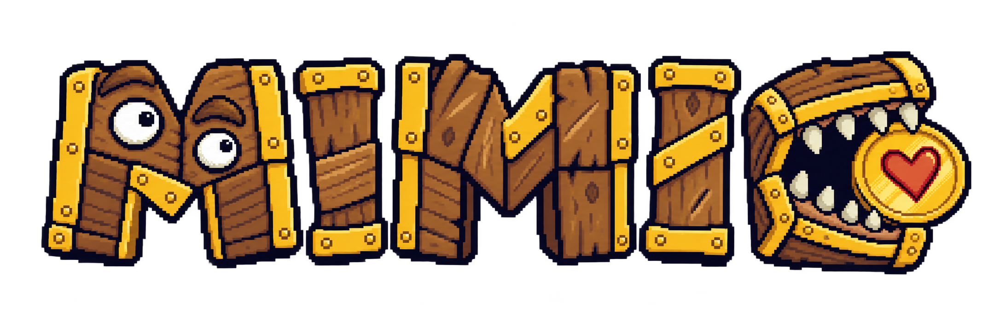
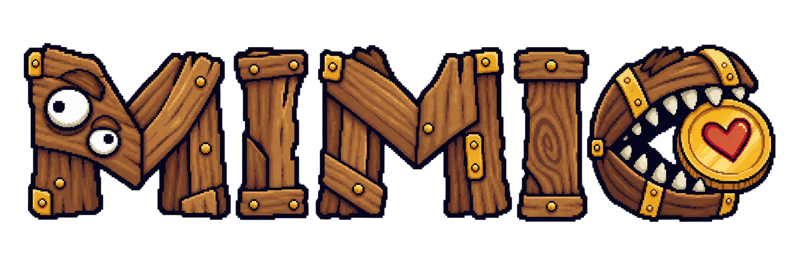
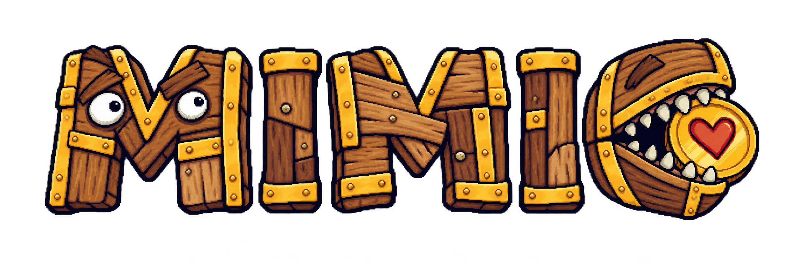
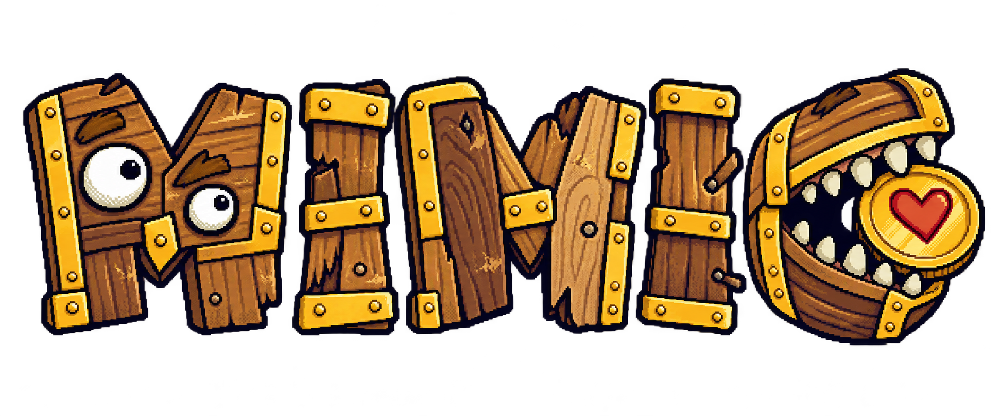

01 · 厚重木板
寬厚、穩重、字高錯落，金屬作角落結構。

所有版本固定使用第一個 M 的失焦 Mimiku 眉眼、最後 C 的寶箱怪嘴與愛心金幣，並維持手繪塗鴉像素風。請用編號選擇，或指定要混合哪些版本的特徵。
寬厚、穩重、字高錯落，金屬作角落結構。

垂直節奏較強、基線不齊，MIMI 負空間清楚。

最大程度貼近既有 Mimiku 的輪廓、材質、眉眼、牙齒與金幣。

拼板更歪、更鬆、更有手畫標題感。

輪廓簡化、負空間放大，縮小後辨識度最高。

短木板與斷面更明顯，最能表現拆解寶箱後重新拼字。

色階更少、像素塊更大、深藍階梯輪廓最明確。

金屬最少，只保留必要固定件，木紋與木形主導。

活物招牌感最明顯，眉眼、木板節奏與咬幣 C 更有角色性。

字高、字寬、傾斜與木種差異最大，但仍維持可讀。
